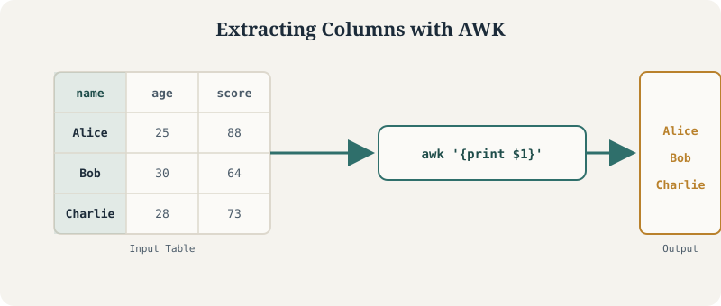

%%bash
cat > file.txt << 'EOF'
Alice 25
Bob 30
Charlie 28
EOF
awk '{print}' file.txtAlice 25
Bob 30
Charlie 28A hands-on tutorial for using AWK to inspect, filter, and process text files from the command line
Nivedita Bhadra
May 1, 2026

The core idea behind awk: it reads a file line by line, splits each line into fields, and lets you filter or extract on those fields directly from the terminal.
awk is a text-processing language particularly well-suited to structured text files. It’s commonly used to:
It operates line by line, automatically splitting each line into fields — which makes it very effective for handling tabular data such as CSV or TSV files. In practical terms, awk combines ideas from a few different tools: conditional filtering similar to a SQL WHERE clause, basic programming logic like Python, and quick calculations often done in spreadsheet software — all directly in the terminal, without loading data into a separate environment.
Every example below is a real, executable code cell — run against small sample files created as we go, so the output you see is genuine awk output, not illustrative text.
AWK Bash Terminal Text Processing
The basic structure of an awk command consists of a pattern and an action:
pattern — a condition that determines which lines to process (optional)action — what to do with those linesIf no pattern is given, the action applies to every line. In the simplest case, awk '{print}' file.txt prints each line as-is — equivalent to displaying the full file. This simple structure is the foundation for everything else awk can do.
By default, awk treats each line as a record and splits it into fields based on whitespace. Each field is accessed with a positional variable — $1 for the first column, $2 for the second, and $0 for the entire line.
Using the same file.txt from above, extracting just the names (first column):
Real-world data isn’t always whitespace-separated — commas in CSV files or tabs in TSV files are common. Tell awk how to split each line with the -F option: -F "," for comma-separated values, -F "\t" for tab-separated files (very common in genetics and bioinformatics).
One of the most useful features of awk is filtering rows based on conditions — numeric comparisons, exact text matches, combined logical conditions, or regular expressions — all without modifying the original file.
awk provides several built-in variables — NR (record/line number), NF (number of fields), and $0 (the full line) are the most commonly used.
Since awk processes data line by line, it’s straightforward to apply arithmetic to specific columns — multiplying values, summing a column, or computing an average.
awk provides two special blocks that run before and after processing the input: BEGIN runs once before any lines are read (useful for initializing variables or printing headers), and END runs once after all lines have been processed (useful for summarizing results).
printfWhile print is convenient, printf gives more control over formatting — similar to printf in C or Python — useful for clean, structured output.
awk has built-in functions for cleaning and transforming text — gsub for find-and-replace, toupper/tolower for case conversion — all applied line by line.
awk supports associative arrays for counting or grouping data dynamically, without predefining their size. Below, each unique name in the first column becomes a key, incremented as awk processes each line, with results printed in the END block.
Beyond column-based filtering, awk can match text patterns directly — lines starting with a character, ending with a pattern, or containing digits.
A single condition is often not enough. awk combines conditions with && (“and”) and || (“or”) for more precise filtering — for example, selecting rows where one column exceeds a threshold while another stays below a different value.
Since logs are usually plain text with a repeated structure, awk is well suited for extracting specific entries, identifying important messages, and counting occurrences of events like errors or warnings — useful for debugging and monitoring pipeline runs.
%%bash
cat > logfile.txt << 'EOF'
INFO 10:01 job started
ERROR 10:02 missing input file
INFO 10:03 retrying
ERROR 10:04 timeout on node 3
INFO 10:05 job completed
EOF
echo "--- ERROR lines ---"
awk '/ERROR/' logfile.txt
echo "--- Count of ERROR lines ---"
awk '/ERROR/ {count++} END {print count}' logfile.txt--- ERROR lines ---
ERROR 10:02 missing input file
ERROR 10:04 timeout on node 3
--- Count of ERROR lines ---
2awk is especially useful in genetics and bioinformatics, where many file formats (VCF, annotation tables, summary statistics) are plain text and tab-separated. Common tasks include selecting chromosome positions, filtering variants by quality, or extracting values packed into a single INFO field.
Below is a small synthetic VCF-style file (not real genomic data) with a standard INFO field containing allele frequency (AF=), to demonstrate the pattern.
%%bash
printf 'chr1\t12345\trs123\tA\tG\t.\tPASS\tAF=0.45\n' > toy.vcf
printf 'chr1\t12400\trs124\tC\tT\t.\tPASS\tAF=0.003\n' >> toy.vcf
printf 'chr2\t500\trs125\tG\tA\t.\tFAIL\tAF=0.12\n' >> toy.vcf
echo "--- Extract key columns (chrom, pos, id) ---"
awk -F "\t" '{print $1, $2, $3}' toy.vcf
echo "--- Filter PASS variants only ---"
awk -F "\t" '$7 == "PASS"' toy.vcf--- Extract key columns (chrom, pos, id) ---
chr1 12345 rs123
chr1 12400 rs124
chr2 500 rs125
--- Filter PASS variants only ---
chr1 12345 rs123 A G . PASS AF=0.45
chr1 12400 rs124 C T . PASS AF=0.003INFO FieldThe INFO field often packs multiple key-value pairs together, separated by semicolons. awk can split this field further to pull out a specific value such as allele frequency.
Once allele frequency is extracted, a numeric filter narrows the file down to rare variants (e.g. AF < 0.01) — a common first step before downstream analysis.
One of awk’s strengths is how easily it pipes together with other command-line tools — grep to pre-filter lines before handing them to awk, or sort/uniq to summarize awk’s output.
grep + awk$0 is the full line; $1, $2, … are individual fields.' and ") in awk scripts — curly/smart quotes (from copy-pasting out of a word processor or slideshow) will cause a syntax error.| Task | Command |
|---|---|
| Print entire file | awk '{print}' file.txt |
| Print a column | awk '{print $1}' file.txt |
| Set delimiter | awk -F "," '{print $1}' file.csv |
| Filter numeric | awk '$2 > 25' file.txt |
| Filter exact match | awk '$1 == "Alice"' file.txt |
| Multiple conditions | awk '$2 > 25 && $2 < 35' file.txt |
| Regex match | awk '$1 ~ /A/' file.txt |
| Line number / field count | awk '{print NR, NF}' file.txt |
| Sum a column | awk '{sum += $2} END {print sum}' file.txt |
| BEGIN / END | awk 'BEGIN{...} {...} END{...}' file.txt |
| Formatted output | awk '{printf "%s: %d\n", $1, $2}' file.txt |
| Replace text | awk '{gsub("A","B"); print}' file.txt |
| Count frequency | awk '{count[$1]++} END{for (k in count) print k, count[k]}' file.txt |
| Combine with grep | grep "ERROR" file.txt \| awk '{print $1}' |
| Sort + count | awk '{print $1}' file.txt \| sort \| uniq -c \| sort -nr |
From here, worth exploring: multi-file awk scripts stored in a .awk file and run with awk -f script.awk, using awk inside larger shell pipelines for QC automation, and comparing awk against pandas/data.table for cases where the data does need to fit in memory.
awk -f scripts Shell Pipelines grep sort/uniq